A feature selection project
# !pip freeze | grep pandas;
# !pip freeze | grep numpy;
# !pip freeze | grep matplotlib;
# !pip freeze | grep seaborn;
# !pip freeze | grep scikit-learn;
# !pip freeze | grep tqdm;# Ignore the warning message
import warnings
warnings.filterwarnings('ignore')The data of this case comes from the information of a Portuguese bank to promote fixed deposit products. You can refer to its official website. The data set collects 17 characteristics, including basic customer information, marketing activity information and socio-economic environment information. The target characteristics are whether customers order products.
The following is an introduction to the meaning of 17 characteristics:
# %config InlineBackend.figure_format='retina'
import numpy as np
import pandas as pd
import matplotlib.pyplot as plt
import seaborn as sns
with open("bank_introduction.txt", "r") as f:
lines = f.read().splitlines()
df_intro = pd.DataFrame(lines, columns=["intro"])
for i in range(len(df_intro)):
print(df_intro["intro"][i])Input variables:
# bank client data:
1 - age (numeric)
2 - job : type of job (categorical: 'admin.','blue-collar','entrepreneur','housemaid','management','retired','self-employed','services','student','technician','unemployed','unknown')
3 - marital : marital status (categorical: 'divorced','married','single','unknown'; note: 'divorced' means divorced or widowed)
4 - education (categorical: 'basic.4y','basic.6y','basic.9y','high.school','illiterate','professional.course','university.degree','unknown')
5 - default: has credit in default? (categorical: 'no','yes','unknown')
6 - housing: has housing loan? (categorical: 'no','yes','unknown')
7 - loan: has personal loan? (categorical: 'no','yes','unknown')
# related with the last contact of the current campaign:
8 - contact: contact communication type (categorical: 'cellular','telephone')
9 - month: last contact month of year (categorical: 'jan', 'feb', 'mar', ..., 'nov', 'dec')
10 - day_of_week: last contact day of the week (categorical: 'mon','tue','wed','thu','fri')
11 - duration: last contact duration, in seconds (numeric). Important note: this attribute highly affects the output target (e.g., if duration=0 then y='no'). Yet, the duration is not known before a call is performed. Also, after the end of the call y is obviously known. Thus, this input should only be included for benchmark purposes and should be discarded if the intention is to have a realistic predictive model.
# other attributes:
12 - campaign: number of contacts performed during this campaign and for this client (numeric, includes last contact)
13 - pdays: number of days that passed by after the client was last contacted from a previous campaign (numeric; 999 means client was not previously contacted)
14 - previous: number of contacts performed before this campaign and for this client (numeric)
15 - poutcome: outcome of the previous marketing campaign (categorical: 'failure','nonexistent','success')
# social and economic context attributes
16 - emp.var.rate: employment variation rate - quarterly indicator (numeric)
17 - cons.price.idx: consumer price index - monthly indicator (numeric)
18 - cons.conf.idx: consumer confidence index - monthly indicator (numeric)
19 - euribor3m: euribor 3 month rate - daily indicator (numeric)
20 - nr.employed: number of employees - quarterly indicator (numeric)
Output variable (desired target):
21 - y - has the client subscribed a term deposit? (binary: 'yes','no')The basic information of customers includes age, occupation, marital status, education level, housing loans and personal loans, etc.; marketing activity information includes call method, number of calls and last marketing results, etc.; socio-economic environment information includes employment change rate, consumer price index and consumer information index, etc.
Read the data:
# To display all columns, add the following command.
pd.set_option('display.max_columns',None)
df=pd.read_csv("bank-additional-full.csv",sep=";")
data=df.copy()
data.head() age job marital education default housing loan contact \
0 56 housemaid married basic.4y no no no telephone
1 57 services married high.school unknown no no telephone
2 37 services married high.school no yes no telephone
3 40 admin. married basic.6y no no no telephone
4 56 services married high.school no no yes telephone
month day_of_week duration campaign pdays previous poutcome \
0 may mon 261 1 999 0 nonexistent
1 may mon 149 1 999 0 nonexistent
2 may mon 226 1 999 0 nonexistent
3 may mon 151 1 999 0 nonexistent
4 may mon 307 1 999 0 nonexistent
emp.var.rate cons.price.idx cons.conf.idx euribor3m nr.employed y
0 1.1 93.994 -36.4 4.857 5191.0 no
1 1.1 93.994 -36.4 4.857 5191.0 no
2 1.1 93.994 -36.4 4.857 5191.0 no
3 1.1 93.994 -36.4 4.857 5191.0 no
4 1.1 93.994 -36.4 4.857 5191.0 no Observe the basic information of the data set:
data.info()<class 'pandas.core.frame.DataFrame'>
RangeIndex: 41188 entries, 0 to 41187
Data columns (total 21 columns):
# Column Non-Null Count Dtype
--- ------ -------------- -----
0 age 41188 non-null int64
1 job 41188 non-null object
2 marital 41188 non-null object
3 education 41188 non-null object
4 default 41188 non-null object
5 housing 41188 non-null object
6 loan 41188 non-null object
7 contact 41188 non-null object
8 month 41188 non-null object
9 day_of_week 41188 non-null object
10 duration 41188 non-null int64
11 campaign 41188 non-null int64
12 pdays 41188 non-null int64
13 previous 41188 non-null int64
14 poutcome 41188 non-null object
15 emp.var.rate 41188 non-null float64
16 cons.price.idx 41188 non-null float64
17 cons.conf.idx 41188 non-null float64
18 euribor3m 41188 non-null float64
19 nr.employed 41188 non-null float64
20 y 41188 non-null object
dtypes: float64(5), int64(5), object(11)
memory usage: 6.6+ MBObservation found:
The dimension of the data set is (41188, 17);
Statistics show that all the features are complete, but many object types of features use unknown to represent missing, so missing values need to be processed;
There are 11 characteristics of object types, which need to be numerically converted.
data.describe() age duration campaign pdays previous \
count 41188.00000 41188.000000 41188.000000 41188.000000 41188.000000
mean 40.02406 258.285010 2.567593 962.475454 0.172963
std 10.42125 259.279249 2.770014 186.910907 0.494901
min 17.00000 0.000000 1.000000 0.000000 0.000000
25% 32.00000 102.000000 1.000000 999.000000 0.000000
50% 38.00000 180.000000 2.000000 999.000000 0.000000
75% 47.00000 319.000000 3.000000 999.000000 0.000000
max 98.00000 4918.000000 56.000000 999.000000 7.000000
emp.var.rate cons.price.idx cons.conf.idx euribor3m nr.employed
count 41188.000000 41188.000000 41188.000000 41188.000000 41188.000000
mean 0.081886 93.575664 -40.502600 3.621291 5167.035911
std 1.570960 0.578840 4.628198 1.734447 72.251528
min -3.400000 92.201000 -50.800000 0.634000 4963.600000
25% -1.800000 93.075000 -42.700000 1.344000 5099.100000
50% 1.100000 93.749000 -41.800000 4.857000 5191.000000
75% 1.400000 93.994000 -36.400000 4.961000 5228.100000
max 1.400000 94.767000 -26.900000 5.045000 5228.100000 Observing the commonly used statistics of each feature, it is found that there are obvious quantitative differences between the data, which needs to be standardised.
First, find all the object type characteristics and count the number of missing values in them.
# Find the object type characteristics
col=data.columns
object_list=[]
for i in range(len(col)):
if type(data[col[i]][0])!=np.int64 and type(data[col[i]][0])!=np.float64:
object_list.append(col[i])You can also directly use the select_dtypes method of DataFrame to specify the choice of object:
# Find the object type characteristics
object_data = data.select_dtypes(include=['object'])
object_columns = object_data.columns
object_list = object_columns.tolist()# Count the number of missing values of each characteristic
missing_list = []
for item in object_columns:
try:
missing_num = object_data[item].value_counts().loc['unknown']
print("The number of missing data about %s :" % item, missing_num)
missing_list.append(item)
except Exception as e:
print("The number of missing data about %s :" % item, '0')The number of missing data about job : 330
The number of missing data about marital : 80
The number of missing data about education : 1731
The number of missing data about default : 8597
The number of missing data about housing : 990
The number of missing data about loan : 990
The number of missing data about contact : 0
The number of missing data about month : 0
The number of missing data about day_of_week : 0
The number of missing data about poutcome : 0
The number of missing data about y : 0In addition to default and education, the number of missing values is small, and the missing sample can be discarded directly; for default and education, fill in the missing values with plurality.
new_data=data[data["job"]!="unknown"][data["marital"]!="unknown"][data["housing"]!="unknown"][data["loan"]!="unknown"]
new_data.head() age job marital education default housing loan contact \
0 56 housemaid married basic.4y no no no telephone
1 57 services married high.school unknown no no telephone
2 37 services married high.school no yes no telephone
3 40 admin. married basic.6y no no no telephone
4 56 services married high.school no no yes telephone
month day_of_week duration campaign pdays previous poutcome \
0 may mon 261 1 999 0 nonexistent
1 may mon 149 1 999 0 nonexistent
2 may mon 226 1 999 0 nonexistent
3 may mon 151 1 999 0 nonexistent
4 may mon 307 1 999 0 nonexistent
emp.var.rate cons.price.idx cons.conf.idx euribor3m nr.employed y
0 1.1 93.994 -36.4 4.857 5191.0 no
1 1.1 93.994 -36.4 4.857 5191.0 no
2 1.1 93.994 -36.4 4.857 5191.0 no
3 1.1 93.994 -36.4 4.857 5191.0 no
4 1.1 93.994 -36.4 4.857 5191.0 no # Discard some missing samples
new_data=data[data["job"]!="unknown"][data["marital"]!="unknown"][data["housing"]!="unknown"][data["loan"]!="unknown"]
new_data.index=range(len(new_data))
# Fill in the missing values with a large number of numbers
new_data["default"].replace('unknown', new_data["default"].value_counts().index[0], inplace=True)
new_data['education'].replace('unknown', new_data["education"].value_counts().index[0], inplace=True)# Check the situation after filling
print (" This is the new distribution of default:") This is the new distribution of default:print (new_data["default"].value_counts())default
no 39800
yes 3
Name: count, dtype: int64print (" This is the new distribution of education:") This is the new distribution of education:print (new_data["education"].value_counts())education
university.degree 13379
high.school 9244
basic.9y 5856
professional.course 5100
basic.4y 4002
basic.6y 2204
illiterate 18
Name: count, dtype: int64# Use one-hot variables to represent object type features.
object_list.remove("y")
for item in object_list:
dummies=pd.get_dummies(new_data[item],prefix=item)
new_data=pd.concat([new_data,dummies],axis=1)
del new_data[item]
# Numericalisation of target characteristics
new_data["label"]=0
new_data["label"][new_data["y"]=="yes"]=1
new_data["label"][new_data["y"]=="no"]=0
del new_data["y"] corr = new_data.corr()
mask = np.zeros_like(corr, dtype=bool)
mask[np.triu_indices_from(mask)] = True
f, ax = plt.subplots(figsize=(10, 10))
cmap = sns.diverging_palette(220, 10, as_cmap=True)
sns.heatmap(corr, mask=mask, cmap=cmap, vmax=1.0,
square=True, xticklabels=2, yticklabels=2,
linewidths=.3, cbar_kws={"shrink": .5}, ax=ax)
plt.show()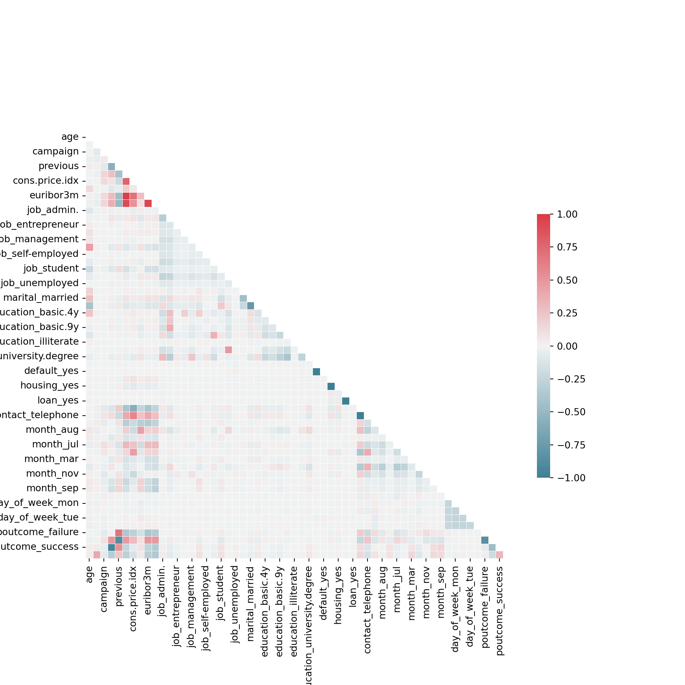
new_data.columnsIndex(['age', 'duration', 'campaign', 'pdays', 'previous', 'emp.var.rate',
'cons.price.idx', 'cons.conf.idx', 'euribor3m', 'nr.employed',
'job_admin.', 'job_blue-collar', 'job_entrepreneur', 'job_housemaid',
'job_management', 'job_retired', 'job_self-employed', 'job_services',
'job_student', 'job_technician', 'job_unemployed', 'marital_divorced',
'marital_married', 'marital_single', 'education_basic.4y',
'education_basic.6y', 'education_basic.9y', 'education_high.school',
'education_illiterate', 'education_professional.course',
'education_university.degree', 'default_no', 'default_yes',
'housing_no', 'housing_yes', 'loan_no', 'loan_yes', 'contact_cellular',
'contact_telephone', 'month_apr', 'month_aug', 'month_dec', 'month_jul',
'month_jun', 'month_mar', 'month_may', 'month_nov', 'month_oct',
'month_sep', 'day_of_week_fri', 'day_of_week_mon', 'day_of_week_thu',
'day_of_week_tue', 'day_of_week_wed', 'poutcome_failure',
'poutcome_nonexistent', 'poutcome_success', 'label'],
dtype='object')The bottom line of the vertical coordinate is the target feature. It can be seen that there are still many features related to it. The darkest colour is the feature duration. Further observe the relationship between them:
f, ax1 = plt.subplots(1, 1, figsize=(6,4))
sns.boxplot(x="label",y='duration',data=new_data,ax=ax1)
plt.show()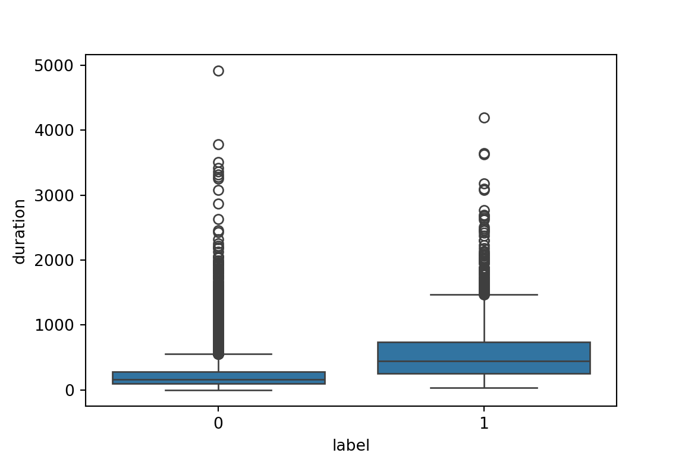
It is easy to find that the characteristic duration has a great impact on the target characteristics, but pay attention to the characteristic information:
duration: last contact duration, in seconds (numeric). Important note: this attribute highly affects the output target (e.g., if duration=0 then y=‘no’). Yet, the duration is not known before a call is performed. Also, after the end of the call y is obviously known. Thus, this input should only be included for benchmark purposes and should be discarded if the intention is to have a realistic predictive model.
This shows that the feature duration is not available at any time, so we should abandon the feature when building the model.
from sklearn import preprocessing as prep
x=new_data.copy()
del x["label"]
del x["duration"]
y=new_data["label"]
minmax_scale=prep.MinMaxScaler().fit( x[ x.columns])
x[ x.columns]=minmax_scale.transform( x[ x.columns])
x.head() age campaign pdays previous emp.var.rate cons.price.idx \
0 0.481481 0.0 1.0 0.0 0.9375 0.698753
1 0.493827 0.0 1.0 0.0 0.9375 0.698753
2 0.246914 0.0 1.0 0.0 0.9375 0.698753
3 0.283951 0.0 1.0 0.0 0.9375 0.698753
4 0.481481 0.0 1.0 0.0 0.9375 0.698753
cons.conf.idx euribor3m nr.employed job_admin. job_blue-collar \
0 0.60251 0.957379 0.859735 0.0 0.0
1 0.60251 0.957379 0.859735 0.0 0.0
2 0.60251 0.957379 0.859735 0.0 0.0
3 0.60251 0.957379 0.859735 1.0 0.0
4 0.60251 0.957379 0.859735 0.0 0.0
job_entrepreneur job_housemaid job_management job_retired \
0 0.0 1.0 0.0 0.0
1 0.0 0.0 0.0 0.0
2 0.0 0.0 0.0 0.0
3 0.0 0.0 0.0 0.0
4 0.0 0.0 0.0 0.0
job_self-employed job_services job_student job_technician \
0 0.0 0.0 0.0 0.0
1 0.0 1.0 0.0 0.0
2 0.0 1.0 0.0 0.0
3 0.0 0.0 0.0 0.0
4 0.0 1.0 0.0 0.0
job_unemployed marital_divorced marital_married marital_single \
0 0.0 0.0 1.0 0.0
1 0.0 0.0 1.0 0.0
2 0.0 0.0 1.0 0.0
3 0.0 0.0 1.0 0.0
4 0.0 0.0 1.0 0.0
education_basic.4y education_basic.6y education_basic.9y \
0 1.0 0.0 0.0
1 0.0 0.0 0.0
2 0.0 0.0 0.0
3 0.0 1.0 0.0
4 0.0 0.0 0.0
education_high.school education_illiterate education_professional.course \
0 0.0 0.0 0.0
1 1.0 0.0 0.0
2 1.0 0.0 0.0
3 0.0 0.0 0.0
4 1.0 0.0 0.0
education_university.degree default_no default_yes housing_no \
0 0.0 1.0 0.0 1.0
1 0.0 1.0 0.0 1.0
2 0.0 1.0 0.0 0.0
3 0.0 1.0 0.0 1.0
4 0.0 1.0 0.0 1.0
housing_yes loan_no loan_yes contact_cellular contact_telephone \
0 0.0 1.0 0.0 0.0 1.0
1 0.0 1.0 0.0 0.0 1.0
2 1.0 1.0 0.0 0.0 1.0
3 0.0 1.0 0.0 0.0 1.0
4 0.0 0.0 1.0 0.0 1.0
month_apr month_aug month_dec month_jul month_jun month_mar \
0 0.0 0.0 0.0 0.0 0.0 0.0
1 0.0 0.0 0.0 0.0 0.0 0.0
2 0.0 0.0 0.0 0.0 0.0 0.0
3 0.0 0.0 0.0 0.0 0.0 0.0
4 0.0 0.0 0.0 0.0 0.0 0.0
month_may month_nov month_oct month_sep day_of_week_fri \
0 1.0 0.0 0.0 0.0 0.0
1 1.0 0.0 0.0 0.0 0.0
2 1.0 0.0 0.0 0.0 0.0
3 1.0 0.0 0.0 0.0 0.0
4 1.0 0.0 0.0 0.0 0.0
day_of_week_mon day_of_week_thu day_of_week_tue day_of_week_wed \
0 1.0 0.0 0.0 0.0
1 1.0 0.0 0.0 0.0
2 1.0 0.0 0.0 0.0
3 1.0 0.0 0.0 0.0
4 1.0 0.0 0.0 0.0
poutcome_failure poutcome_nonexistent poutcome_success
0 0.0 1.0 0.0
1 0.0 1.0 0.0
2 0.0 1.0 0.0
3 0.0 1.0 0.0
4 0.0 1.0 0.0 The requirement of this case is to find the key features that affect the ordered products and establish model predictions, so it is more appropriate to choose encapsulated and embedded feature selection methods. Here we try two embedded methods: regularised models and tree-based models. After data preprocessing, there are a total of 56 features. In order to effectively reduce the number of features, we adopt L1 regularisation, because in this case, the model effect is more important than stability; the tree-based model adopts the ExtraTrees model, which is an integrated model similar to a random forest, and the integrated model is selected. In order to improve the prediction effect of the model, the criteria for selecting branch nodes have tried Gini impurity and Entropy entropy respectively.
First, randomly divide the training set and the test set in a ratio of 7:3:
# Randomly divide the training set and the test set
from sklearn.model_selection import train_test_split
train_x, test_x, train_y, test_y = train_test_split(x, y, test_size=0.3, random_state=0)First, define the functions that need to be used after three:
The function evaluate(pred,test_y) is used to evaluate the classification results;
The function find_name(new_feature, df_feature) is used to output the name of the key feature;
The function FS_importance(arr_importance, col, N) is used to select features according to the importance of features.
from sklearn import metrics
from sklearn.metrics import classification_report
"""
The function evaluate(pred,test_y) is used to evaluate the classification results;
Input: real classification, predicted classification results
Output: classification accuracy, confusion matrix, etc.
"""'\nThe function evaluate(pred,test_y) is used to evaluate the classification results;\n\nInput: real classification, predicted classification results\n\nOutput: classification accuracy, confusion matrix, etc.\n'def evaluate(pred,test_y):
# The accuracy rate of output classification
print("Accuracy: %.4f" % (metrics.accuracy_score(test_y,pred)))
# Output various indicators to measure the classification effect
print(classification_report(test_y, pred))
# More intuitively, we draw a confusion matrix through seaborn.
# %matplotlib inline
plt.figure(figsize=(6,4))
colorMetrics = metrics.confusion_matrix(test_y,pred)
# Coordinate y represents test_y, that is, the real category, and coordinate x represents the estimated category pred
sns.heatmap(colorMetrics,annot=True,fmt='d',xticklabels=[0,1],yticklabels=[0,1])
plt.show()
"""
The function find_name(new_feature, df_feature) is used to output the name of the key feature;
Input: original features, selected key features;
Output: the name of the key feature
"""'\nThe function find_name(new_feature, df_feature) is used to output the name of the key feature;\n\nInput: original features, selected key features;\n\nOutput: the name of the key feature\n'def find_name(new_feature, df_feature):
# Define the list to store the key feature name
feature_name=[]
col=df_feature.columns
# Find the name information of key features
for i in range(int(new_feature.shape[0])):
for j in range(df_feature.shape[1]):
# The discrimination standard is that the feature vector in new_feature is consistent with the feature vector in df_feature.
if np.mean(abs(new_feature[i]-df_feature[col[j]]))==0:
feature_name.append(col[j])
print (i+1,col[j])
break
return feature_name
"""
The function FS_importance(arr_importance, col, N) is used to select features according to the importance of features.
Input: feature importance, feature name set, number of selected features
Output: the first N characteristics according to the importance of the characteristics
"""'\nThe function FS_importance(arr_importance, col, N) is used to select features according to the importance of features.\n\nInput: feature importance, feature name set, number of selected features\n\nOutput: the first N characteristics according to the importance of the characteristics\n'def FS_importance(arr_importance, col, N):
# Dictionary storage
dict_order=dict(zip(col, arr_importance))
# Sort by the importance of the characteristics
new_feature = sorted(dict_order.items(), key=lambda item: item[1], reverse=True)
feature_top, score=zip(*new_feature)
return list(feature_top[:N])This section consists of three parts:
Feature selection: Feature selection adopts L1 regularisation, and the model effect when the punishment coefficient C takes different values is tried respectively. The model effect is measured by the average accuracy rate obtained from the 50% cross-verification on the training set. Through graph comparison, the punishment coefficient that makes the model effect the best is found;
Establish a model on the feature subset: use the optimal subset obtained in the feature selection to establish a model;
Establish a model on the collection of features: Use the original collection of features to establish a model, compare it with the model effect of Part 2, and observe the impact of feature selection on the model effect.
Discuss the impact of different penalty coefficients on the feature selection effect, and carry out 50% cross-verification on the training set to verify the model effect. The baseline is the average accuracy rate of the model obtained by 50% cross-verification on the training set with the feature set.
# Import the modules required for cross-verification and feature selection
import tqdm
from sklearn import model_selection
from sklearn.svm import LinearSVC
from sklearn.feature_selection import SelectFromModel
# Define a model without regularisation
lsvc = LinearSVC(C=1e-5)
# Cross-validation calculates the average accuracy rate of the complete collection of application features
score=model_selection.cross_val_score(lsvc, train_x, train_y, cv=5)
# Explore the impact of different parameters on the effect of feature selection
# xx represents the set of parameters
acc_subset=[]
xx=np.array(range(5,205,5))*0.01
for i in tqdm.tqdm(xx):
# Define a model for L1 regularised feature selection
lsvc_l1 = LinearSVC(C=i, penalty="l1", dual=False)
# Cross-verification calculates the average accuracy of the application feature subset
scores=model_selection.cross_val_score(lsvc_l1, train_x, train_y, cv=5)
acc_subset.append(scores.mean()) 0%| | 0/40 [00:00<?, ?it/s] 2%|2 | 1/40 [00:13<08:45, 13.48s/it] 5%|5 | 2/40 [00:28<09:14, 14.59s/it] 8%|7 | 3/40 [00:45<09:30, 15.42s/it] 10%|# | 4/40 [01:00<09:14, 15.39s/it] 12%|#2 | 5/40 [01:24<10:50, 18.58s/it] 15%|#5 | 6/40 [01:54<12:34, 22.20s/it] 18%|#7 | 7/40 [02:33<15:22, 27.95s/it] 20%|## | 8/40 [02:57<14:06, 26.46s/it] 22%|##2 | 9/40 [03:17<12:36, 24.41s/it] 25%|##5 | 10/40 [03:39<11:50, 23.69s/it] 28%|##7 | 11/40 [04:03<11:30, 23.80s/it] 30%|### | 12/40 [04:35<12:16, 26.30s/it] 32%|###2 | 13/40 [05:18<14:06, 31.35s/it] 35%|###5 | 14/40 [05:53<14:08, 32.63s/it] 38%|###7 | 15/40 [06:25<13:30, 32.40s/it] 40%|#### | 16/40 [07:02<13:28, 33.70s/it] 42%|####2 | 17/40 [07:33<12:36, 32.89s/it] 45%|####5 | 18/40 [08:04<11:54, 32.46s/it] 48%|####7 | 19/40 [08:33<10:55, 31.22s/it] 50%|##### | 20/40 [08:58<09:52, 29.60s/it] 52%|#####2 | 21/40 [09:26<09:11, 29.05s/it] 55%|#####5 | 22/40 [10:00<09:10, 30.58s/it] 57%|#####7 | 23/40 [10:36<09:04, 32.04s/it] 60%|###### | 24/40 [11:07<08:27, 31.72s/it] 62%|######2 | 25/40 [11:42<08:10, 32.73s/it] 65%|######5 | 26/40 [12:08<07:09, 30.66s/it] 68%|######7 | 27/40 [12:38<06:37, 30.54s/it] 70%|####### | 28/40 [13:03<05:48, 29.04s/it] 72%|#######2 | 29/40 [13:35<05:27, 29.76s/it] 75%|#######5 | 30/40 [14:13<05:22, 32.29s/it] 78%|#######7 | 31/40 [14:44<04:46, 31.86s/it] 80%|######## | 32/40 [15:13<04:08, 31.00s/it] 82%|########2 | 33/40 [15:50<03:49, 32.79s/it] 85%|########5 | 34/40 [16:16<03:04, 30.79s/it] 88%|########7 | 35/40 [16:53<02:43, 32.63s/it] 90%|######### | 36/40 [17:38<02:24, 36.20s/it] 92%|#########2| 37/40 [18:17<01:51, 37.18s/it] 95%|#########5| 38/40 [18:56<01:15, 37.62s/it] 98%|#########7| 39/40 [19:42<00:40, 40.11s/it]100%|##########| 40/40 [20:32<00:00, 43.37s/it]100%|##########| 40/40 [20:33<00:00, 30.83s/it]Draw a picture to observe the impact of different penalty coefficients on the feature selection effect:
# yy represents the average accuracy rate of applied feature subsets under different parameters.
# y0 represents the average accuracy rate of the complete collection of application features, which is used as the baseline.
yy=acc_subset
y0=[score.mean()]*len(xx)
# Compare the difference between the complete collection of features and the subset of features
fig=plt.figure(figsize=(18,6))
ax1=fig.add_subplot(1,2,1)
plt.plot(xx,yy,"bo-")
plt.plot(xx,y0,"r-")
ax1.set_xlabel("The value of the parameter C")
ax1.set_ylabel("Mean accuracy on training set by CV")
ax1.set_title("Comparison between feature universal set and subset")
ax1.set_ylim([score.mean()-0.01,max(yy)+0.01])(0.8758301659279453, 0.9080689894320492)ax1.set_xlim([min(xx),max(xx)])(0.05, 2.0)# Observe the differences between different characteristic subsets
ax2=fig.add_subplot(1,2,2)
plt.plot(xx,yy,"bo-")
plt.plot(xx,y0,"r-")
ax2.set_xlabel("The value of the parameter C")
ax2.set_ylabel("Mean accuracy on training set by CV")
ax2.set_title("Comparison among different parameters")
ax2.set_ylim([min(yy)-0.001,max(yy)+0.001])(0.8965306346399657, 0.8990689894320492)ax2.set_xlim([min(xx),max(xx)])(0.05, 2.0)plt.show()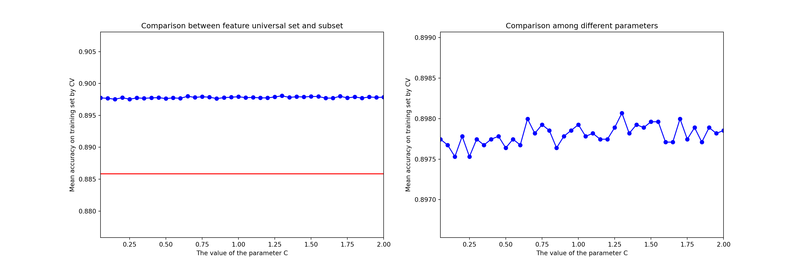
The horizontal coordinates of the above two diagrams are the punishment coefficients, and the vertical coordinates are the average accuracy rate obtained by cross-verification. Observe the left figure, the accuracy rate of the model applied feature subsets under different punishment coefficients in the blue folding table, and the red straight line is our baseline, that is, the accuracy rate obtained by applying the feature set on the same model. It can be found that the blue line is above the red line, which shows that the model effect after L1 regularisation feature selection has been significantly improved. Furthermore, we also want to observe the difference between different feature subsets. The right figure enlarges the blue line. We can see that when the punishment coefficient is 1.7, the model effect is the best, so we can try to use L1 regularisation with a punishment coefficient of 1.7 for feature selection.
Establish a LinearSVC model on the optimal subset obtained in the previous part, and output the feature name selected by L1 regularisation.
# Establish an L1 regularisation model
lsvc_l1 = LinearSVC(C=1.7, penalty="l1", dual=False).fit(train_x, train_y)
pred=lsvc_l1.predict(test_x)
# Output the characteristic name selected by L1 regularisation
model = SelectFromModel(lsvc_l1,prefit=True)
new_train_x = model.transform(train_x).T
FS_result=find_name(new_train_x, train_x)1 age
2 campaign
3 pdays
4 emp.var.rate
5 cons.price.idx
6 cons.conf.idx
7 euribor3m
8 nr.employed
9 job_admin.
10 job_blue-collar
11 job_entrepreneur
12 job_management
13 job_retired
14 job_self-employed
15 job_services
16 job_student
17 job_technician
18 marital_divorced
19 marital_married
20 marital_single
21 education_basic.4y
22 education_basic.6y
23 education_basic.9y
24 education_high.school
25 education_illiterate
26 education_professional.course
27 education_university.degree
28 default_no
29 housing_no
30 housing_yes
31 loan_no
32 loan_yes
33 contact_cellular
34 contact_telephone
35 month_apr
36 month_aug
37 month_dec
38 month_jul
39 month_jun
40 month_mar
41 month_may
42 month_oct
43 month_sep
44 day_of_week_mon
45 day_of_week_thu
46 day_of_week_tue
47 day_of_week_wed
48 poutcome_failure
49 poutcome_nonexistent
50 poutcome_successEvaluate_subset the values of various evaluation indicators of the model in the list:
from sklearn import metrics
#accuracy
acc_subset = metrics.accuracy_score(test_y,pred)
#precision
precision_subset = metrics.precision_score(test_y,pred,average='weighted')
#recall
recall_subset = metrics.recall_score(test_y,pred,average='weighted')
#f1-score
f1_subset = metrics.f1_score(test_y,pred,average='weighted')
evaluate_subset = [acc_subset,precision_subset,recall_subset,f1_subset]The detailed evaluation of the model effect is shown in the confusion matrix in the figure below:
evaluate(pred,test_y)Accuracy: 0.9044
precision recall f1-score support
0 0.91 0.99 0.95 10635
1 0.71 0.22 0.33 1306
accuracy 0.90 11941
macro avg 0.81 0.60 0.64 11941
weighted avg 0.89 0.90 0.88 11941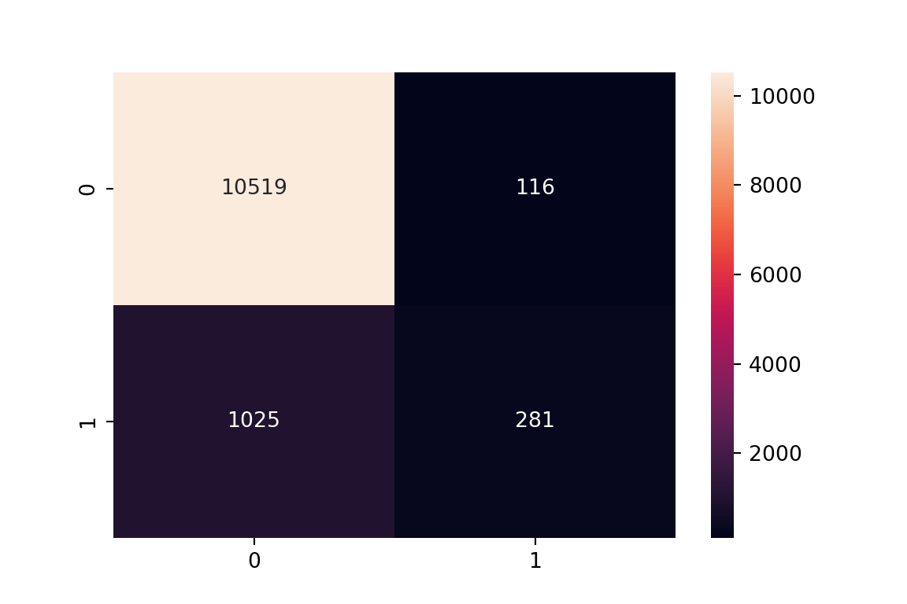
Build the same LinearSVC model on the feature collection:
# Establish a model without regularisation (set C to a number close to 0)
lsvc = LinearSVC(C=1e-5)
lsvc_model = lsvc.fit(train_x,train_y)
pred=lsvc_model.predict(test_x)More detailed evaluation of the model effect:
#accuracy
acc_all = metrics.accuracy_score(test_y,pred)
#precision
precision_all = metrics.precision_score(test_y,pred,average='weighted')
#recall
recall_all = metrics.recall_score(test_y,pred,average='weighted')
#f1-score
f1_all = metrics.f1_score(test_y,pred,average='weighted')
evaluate_all = [acc_all,precision_all,recall_all,f1_all]evaluate(pred,test_y)Accuracy: 0.8906
precision recall f1-score support
0 0.89 1.00 0.94 10635
1 0.00 0.00 0.00 1306
accuracy 0.89 11941
macro avg 0.45 0.50 0.47 11941
weighted avg 0.79 0.89 0.84 11941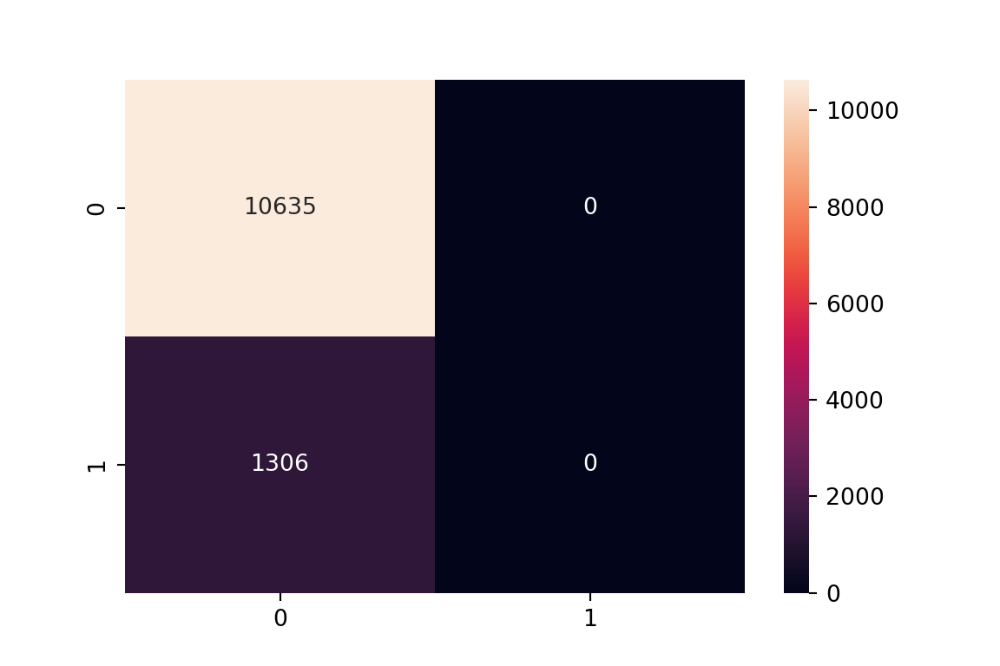
More intuitively compare the difference in the model effect brought by the feature subset and the feature set:
index=["accuracy","precision","recall","f1-score"]
data = zip(evaluate_all,evaluate_subset)
df=pd.DataFrame(data,columns=["universal set","subset"],index=index)
df.plot(kind="bar",figsize=(10,8))
plt.ylim([0.75,0.95])(0.75, 0.95)plt.show()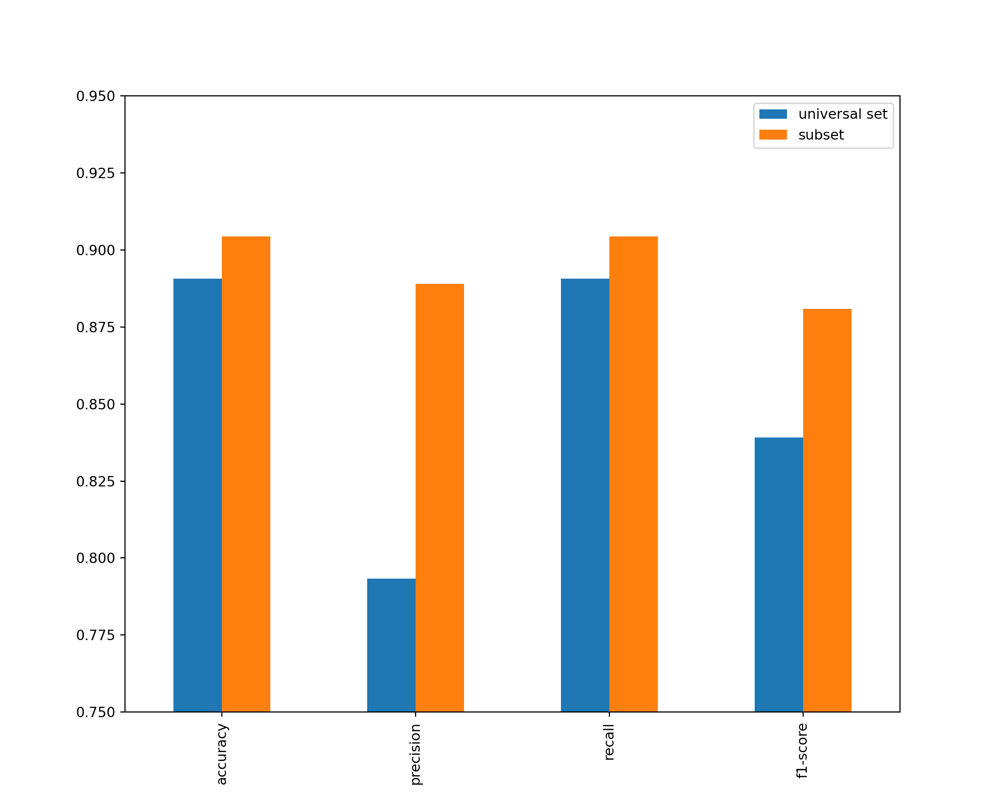
The model established by applying the feature subset has better performance in all aspects, which shows that it is necessary to select features before modelling. In particular, using the model obtained from the data collection to predict the negative class (label value is 0) of the samples of all test sets, this model is actually meaningless.
This section consists of three parts:
Feature selection: Feature selection tried to take Gini impurity and Entropy as indicators, and compared the impact of selecting different numbers of characteristics on the model effect. The model effect is measured by the average accuracy rate obtained by 50% cross-verification on the training set. Through graph comparison, it is found that the model effect The number of the best characteristics;
Establish a model on the feature subset: use the optimal subset obtained in the feature selection to establish a model;
Establish a model on the collection of features: Use the original collection of features to establish a model, compare it with the model effect of Part 2, and observe the impact of feature selection on the model effect.
The index is characterised by Gini inpurity and Entropy, and the impact of selecting different features on the feature selection effect is discussed. 50% cross-verification is carried out on the training set to verify the model effect. The baseline is the average accuracy rate of the model obtained by 50% cross-verification on the training set.
# Define a model with Gini impurity as the classification indicator
from sklearn.ensemble import ExtraTreesClassifier
clf_gini = ExtraTreesClassifier(criterion='gini')
# Fit the model on the training set to obtain the characteristic importance score.
clf_gini = clf_gini.fit(train_x, train_y)
importance_gini=clf_gini.feature_importances_
# Cross-validation calculates the average accuracy rate of the complete collection of application features
score_gini=model_selection.cross_val_score(clf_gini, train_x, train_y, cv=5)
# Define a model with Entropy entropy as the classification indicator
from sklearn.ensemble import ExtraTreesClassifier
clf_entropy = ExtraTreesClassifier(criterion='entropy')
# Fit the model on the training set to obtain the characteristic importance score.
clf_entropy = clf_entropy.fit(train_x, train_y)
importance_entropy=clf_entropy.feature_importances_
# Cross-validation calculates the average accuracy rate of the complete collection of application features
score_entropy=model_selection.cross_val_score(clf_entropy, train_x, train_y, cv=5)# Take Gini impurity as the indicator
# Explore the influence of different numbers of features on the effect of feature selection
# xx represents the set of the number of features.
acc_subset_gini=[]
xx=np.array(range(1,56,1))
for i in tqdm.tqdm(xx):
# Define the ExtraTrees model
clf_gini = ExtraTreesClassifier(criterion='gini')
# Choose characteristics according to the importance of characteristics
feature=FS_importance(importance_gini, train_x.columns, i)
new_train_x=train_x[feature]
# Cross-verification calculates the average accuracy of the application feature subset
scores=model_selection.cross_val_score(clf_gini, new_train_x, train_y, cv=5)
acc_subset_gini.append(scores.mean()) 0%| | 0/55 [00:00<?, ?it/s] 2%|1 | 1/55 [00:05<05:23, 5.99s/it] 4%|3 | 2/55 [00:11<05:12, 5.90s/it] 5%|5 | 3/55 [00:21<06:46, 7.81s/it] 7%|7 | 4/55 [00:33<07:54, 9.29s/it] 9%|9 | 5/55 [00:44<08:14, 9.89s/it] 11%|# | 6/55 [00:55<08:20, 10.22s/it] 13%|#2 | 7/55 [01:05<08:16, 10.34s/it] 15%|#4 | 8/55 [01:19<08:55, 11.39s/it] 16%|#6 | 9/55 [01:34<09:30, 12.40s/it] 18%|#8 | 10/55 [01:48<09:42, 12.94s/it] 20%|## | 11/55 [02:03<10:05, 13.76s/it] 22%|##1 | 12/55 [02:19<10:19, 14.40s/it] 24%|##3 | 13/55 [02:34<10:12, 14.58s/it] 25%|##5 | 14/55 [02:50<10:17, 15.06s/it] 27%|##7 | 15/55 [03:08<10:27, 15.69s/it] 29%|##9 | 16/55 [03:25<10:35, 16.30s/it] 31%|### | 17/55 [03:47<11:20, 17.91s/it] 33%|###2 | 18/55 [04:05<11:06, 18.01s/it] 35%|###4 | 19/55 [04:21<10:25, 17.38s/it] 36%|###6 | 20/55 [04:40<10:21, 17.76s/it] 38%|###8 | 21/55 [04:58<10:08, 17.90s/it] 40%|#### | 22/55 [05:16<09:47, 17.80s/it] 42%|####1 | 23/55 [05:33<09:30, 17.82s/it] 44%|####3 | 24/55 [05:51<09:14, 17.87s/it] 45%|####5 | 25/55 [06:12<09:18, 18.61s/it] 47%|####7 | 26/55 [06:32<09:11, 19.01s/it] 49%|####9 | 27/55 [06:49<08:39, 18.54s/it] 51%|##### | 28/55 [07:04<07:50, 17.43s/it] 53%|#####2 | 29/55 [07:20<07:24, 17.11s/it] 55%|#####4 | 30/55 [07:39<07:18, 17.52s/it] 56%|#####6 | 31/55 [07:55<06:49, 17.05s/it] 58%|#####8 | 32/55 [08:11<06:29, 16.93s/it] 60%|###### | 33/55 [08:29<06:13, 16.99s/it] 62%|######1 | 34/55 [08:45<05:56, 16.97s/it] 64%|######3 | 35/55 [09:02<05:38, 16.95s/it] 65%|######5 | 36/55 [09:22<05:37, 17.74s/it] 67%|######7 | 37/55 [09:41<05:25, 18.09s/it] 69%|######9 | 38/55 [10:01<05:17, 18.67s/it] 71%|####### | 39/55 [10:20<05:01, 18.84s/it] 73%|#######2 | 40/55 [10:39<04:41, 18.79s/it] 75%|#######4 | 41/55 [10:58<04:23, 18.80s/it] 76%|#######6 | 42/55 [11:17<04:07, 19.02s/it] 78%|#######8 | 43/55 [11:37<03:50, 19.19s/it] 80%|######## | 44/55 [11:56<03:31, 19.20s/it] 82%|########1 | 45/55 [12:16<03:14, 19.41s/it] 84%|########3 | 46/55 [12:35<02:54, 19.36s/it] 85%|########5 | 47/55 [12:55<02:36, 19.60s/it] 87%|########7 | 48/55 [13:15<02:17, 19.65s/it] 89%|########9 | 49/55 [13:40<02:07, 21.33s/it] 91%|######### | 50/55 [14:12<02:02, 24.42s/it] 93%|#########2| 51/55 [14:32<01:33, 23.26s/it] 95%|#########4| 52/55 [14:53<01:07, 22.45s/it] 96%|#########6| 53/55 [15:18<00:46, 23.35s/it] 98%|#########8| 54/55 [15:41<00:23, 23.20s/it]100%|##########| 55/55 [16:03<00:00, 22.81s/it]100%|##########| 55/55 [16:03<00:00, 17.52s/it]# Take Entropy Entropy As The Indicator
# Explore the influence of different numbers of features on the effect of feature selection
# xx represents the set of the number of features.
acc_subset_entropy=[]
xx=np.array(range(1,56,1))
for i in tqdm.tqdm(xx):
# Define the ExtraTrees model
clf_entropy = ExtraTreesClassifier(criterion='entropy')
# Choose characteristics according to the importance of characteristics
feature=FS_importance(importance_entropy, train_x.columns, i)
new_train_x=train_x[feature]
# Cross-verification calculates the average accuracy of the application feature subset
scores=model_selection.cross_val_score(clf_entropy, new_train_x, train_y, cv=5)
acc_subset_entropy.append(scores.mean()) 0%| | 0/55 [00:00<?, ?it/s] 2%|1 | 1/55 [00:03<03:12, 3.56s/it] 4%|3 | 2/55 [00:11<05:39, 6.40s/it] 5%|5 | 3/55 [00:22<07:04, 8.16s/it] 7%|7 | 4/55 [00:33<08:00, 9.41s/it] 9%|9 | 5/55 [00:43<08:02, 9.66s/it] 11%|# | 6/55 [00:54<08:06, 9.93s/it] 13%|#2 | 7/55 [01:04<07:57, 9.95s/it] 15%|#4 | 8/55 [01:18<08:48, 11.24s/it] 16%|#6 | 9/55 [01:31<09:07, 11.91s/it] 18%|#8 | 10/55 [01:43<09:00, 12.01s/it] 20%|## | 11/55 [01:56<08:53, 12.13s/it] 22%|##1 | 12/55 [02:10<09:12, 12.86s/it] 24%|##3 | 13/55 [02:25<09:21, 13.38s/it] 25%|##5 | 14/55 [02:40<09:38, 14.10s/it] 27%|##7 | 15/55 [02:54<09:17, 13.94s/it] 29%|##9 | 16/55 [03:13<10:01, 15.42s/it] 31%|### | 17/55 [03:29<09:55, 15.67s/it] 33%|###2 | 18/55 [03:48<10:19, 16.74s/it] 35%|###4 | 19/55 [04:06<10:13, 17.05s/it] 36%|###6 | 20/55 [04:24<10:09, 17.41s/it] 38%|###8 | 21/55 [04:42<09:56, 17.56s/it] 40%|#### | 22/55 [05:00<09:38, 17.53s/it] 42%|####1 | 23/55 [05:19<09:33, 17.91s/it] 44%|####3 | 24/55 [05:38<09:28, 18.33s/it] 45%|####5 | 25/55 [05:57<09:13, 18.44s/it] 47%|####7 | 26/55 [06:17<09:15, 19.16s/it] 49%|####9 | 27/55 [06:38<09:09, 19.64s/it] 51%|##### | 28/55 [07:00<09:05, 20.21s/it] 53%|#####2 | 29/55 [07:19<08:38, 19.94s/it] 55%|#####4 | 30/55 [07:39<08:19, 19.97s/it] 56%|#####6 | 31/55 [08:00<08:06, 20.29s/it] 58%|#####8 | 32/55 [08:21<07:50, 20.46s/it] 60%|###### | 33/55 [08:41<07:26, 20.29s/it] 62%|######1 | 34/55 [09:03<07:16, 20.81s/it] 64%|######3 | 35/55 [09:23<06:53, 20.66s/it] 65%|######5 | 36/55 [09:46<06:44, 21.27s/it] 67%|######7 | 37/55 [10:07<06:23, 21.29s/it] 69%|######9 | 38/55 [10:30<06:09, 21.73s/it] 71%|####### | 39/55 [10:52<05:49, 21.84s/it] 73%|#######2 | 40/55 [11:15<05:32, 22.14s/it] 75%|#######4 | 41/55 [11:38<05:15, 22.54s/it] 76%|#######6 | 42/55 [12:02<04:59, 23.01s/it] 78%|#######8 | 43/55 [12:25<04:32, 22.72s/it] 80%|######## | 44/55 [13:03<05:00, 27.36s/it] 82%|########1 | 45/55 [13:55<05:49, 34.92s/it] 84%|########3 | 46/55 [14:51<06:09, 41.07s/it] 85%|########5 | 47/55 [15:51<06:15, 46.92s/it] 87%|########7 | 48/55 [16:54<06:00, 51.54s/it] 89%|########9 | 49/55 [17:49<05:16, 52.72s/it] 91%|######### | 50/55 [18:51<04:37, 55.57s/it] 93%|#########2| 51/55 [19:51<03:47, 56.77s/it] 95%|#########4| 52/55 [20:45<02:48, 56.04s/it] 96%|#########6| 53/55 [21:37<01:49, 54.86s/it] 98%|#########8| 54/55 [22:34<00:55, 55.27s/it]100%|##########| 55/55 [23:34<00:00, 56.96s/it]100%|##########| 55/55 [23:34<00:00, 25.73s/it]Draw a picture to observe the impact of different characteristics on the feature selection effect:
# Take Gini impurity as the indicator
# yy represents the average accuracy rate of applied feature subsets under different characteristics.
# y0 represents the average accuracy rate of the complete collection of application features, which is used as the baseline.
yy=acc_subset_gini
y0=[score_gini.mean()]*len(xx)
# Compare the difference between the complete collection of features and the subset of features
fig=plt.figure(figsize=(18,6))
ax1=fig.add_subplot(1,2,1)
plt.plot(xx,yy,"bo-")
plt.plot(xx,y0,"r-")
ax1.set_xlabel("The number of features")
ax1.set_ylabel("Mean accuracy on training set by CV")
ax1.set_title("Comparison among feature numbers by Gini")
ax1.set_ylim([min(yy)-0.001,max(yy)+0.001])(0.8693250300875066, 0.8865071479001735)ax1.set_xlim([min(xx),max(xx)])(1.0, 55.0)# yy represents the average accuracy rate of applied feature subsets under different parameters.
# y0 represents the average accuracy rate of the complete collection of application features, which is used as the baseline.
yy=acc_subset_entropy
y0=[score_entropy.mean()]*len(xx)
# Observe the differences between different characteristic subsets
ax2=fig.add_subplot(1,2,2)
plt.plot(xx,yy,"bo-")
plt.plot(xx,y0,"r-")
ax2.set_xlabel("The number of features")
ax2.set_ylabel("Mean accuracy on training set by CV")
ax2.set_title("Comparison among feature numbers by Entropy")
ax2.set_ylim([min(yy)-0.001,max(yy)+0.001])(0.8696480996404957, 0.8855740197746055)ax2.set_xlim([min(xx),max(xx)])(1.0, 55.0)plt.show()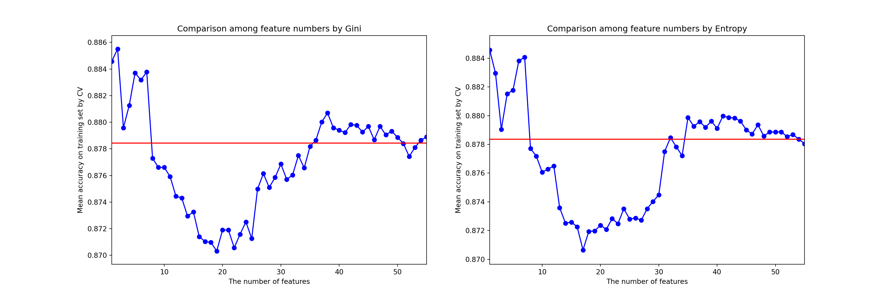
The horizontal coordinates of the above two figures are the number of features, and the vertical coordinates are the average accuracy rate obtained by cross-verification. The model accuracy rate of the application of feature subsets under different features in the blue folding table, and the red straight line is our baseline, that is, the accuracy rate obtained by applying the full set of features on the same model, different The left figure uses Gini impurity as the indicator for feature selection, while the right figure takes Entropy as the indicator for feature selection. It can be found that the number of features has a great impact on the effect of feature selection. On some feature subsets (for example, when the number of features is 2, 5, 6, 55), the model can achieve better results than baseline; but on some other feature subsets (such as when the number of features is 14, 15, 16), the model On the contrary, the effect of the mould has been reduced a lot. It is found from the figure that when the feature subset contains 2 features, the model effect is the best. However, after testing, it is found that when the number of features is too small, although the accuracy rate is indeed high, it will cause a very low F1 value. In the end, we choose the feature subset with the number of features of 6 obtained with Entropy as the indicator as the optimal subset candidate. We would like to remind everyone that for classification problems, we can’t just look at the accuracy rate. Other indicators are also very important. The selection of characteristic subsets should be considered comprehensively from many aspects.
The first 6 key characteristics are as follows:
print ("The most important 6 features computed by mini:")The most important 6 features computed by mini:print(FS_importance(importance_gini, train_x.columns, 6))['age', 'campaign', 'euribor3m', 'nr.employed', 'pdays', 'emp.var.rate']print ("The most important 6 features computed by entropy:")The most important 6 features computed by entropy:print(FS_importance(importance_entropy, train_x.columns, 6))['age', 'euribor3m', 'campaign', 'nr.employed', 'emp.var.rate', 'pdays']Establish the ExtraTrees model on the optimal subset obtained in the previous part, and output the feature name selected with entropy as the indicator.
# Define the ExtraTrees model
clf_entropy = ExtraTreesClassifier(criterion='entropy')
# Choose characteristics according to the importance of characteristics
feature=FS_importance(importance_entropy, train_x.columns, 6)
new_train_x=train_x[feature]
new_test_x=test_x[feature]
clf_entropy = clf_entropy.fit(new_train_x, train_y)
pred=clf_entropy.predict(new_test_x)Detailed evaluation of the model effect:
#accuracy
acc_subset = metrics.accuracy_score(test_y,pred)
#precision
precision_subset = metrics.precision_score(test_y,pred,average='weighted')
#recall
recall_subset = metrics.recall_score(test_y,pred,average='weighted')
#f1-score
f1_subset = metrics.f1_score(test_y,pred,average='weighted')
evaluate_subset = [acc_subset,precision_subset,recall_subset,f1_subset]evaluate(pred,test_y)Accuracy: 0.8879
precision recall f1-score support
0 0.92 0.96 0.94 10635
1 0.48 0.30 0.37 1306
accuracy 0.89 11941
macro avg 0.70 0.63 0.65 11941
weighted avg 0.87 0.89 0.88 11941Build the same ExtraTrees model on the collection of features:
from sklearn.ensemble import ExtraTreesClassifier
clf_entropy = ExtraTreesClassifier(criterion='entropy')
clf_entropy = clf_entropy.fit(train_x, train_y)
pred=clf_entropy.predict(test_x)Detailed evaluation of the model effect:
#accuracy
acc_all = metrics.accuracy_score(test_y,pred)
#precision
precision_all = metrics.precision_score(test_y,pred,average='weighted')
#recall
recall_all = metrics.recall_score(test_y,pred,average='weighted')
#f1-score
f1_all = metrics.f1_score(test_y,pred,average='weighted')
evaluate_all = [acc_all,precision_all,recall_all,f1_all]evaluate(pred,test_y)Accuracy: 0.8790
precision recall f1-score support
0 0.92 0.95 0.93 10635
1 0.43 0.32 0.37 1306
accuracy 0.88 11941
macro avg 0.67 0.64 0.65 11941
weighted avg 0.87 0.88 0.87 11941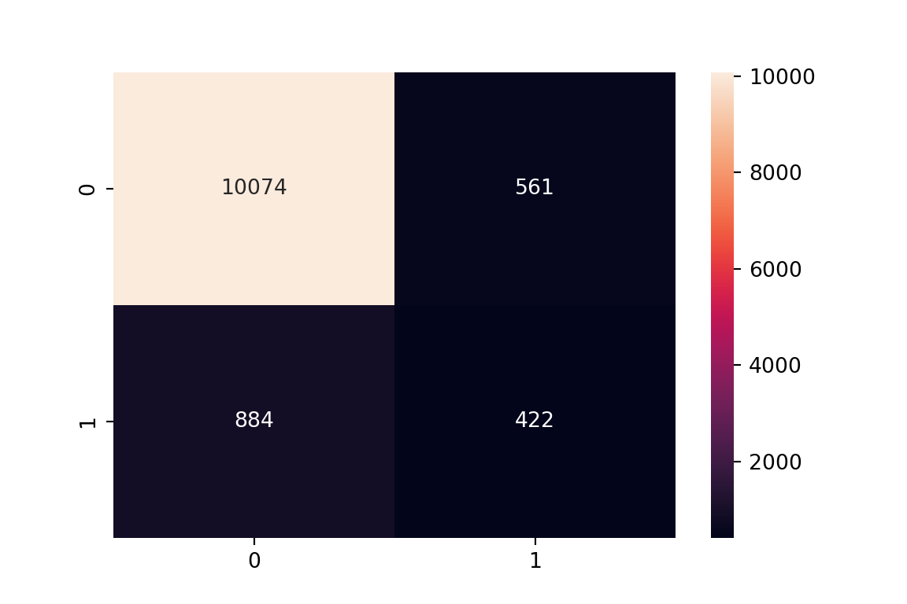
More intuitively compare the difference in the model effect brought by the feature subset and the feature set:
index=["accuracy","precision","recall","f1-score"]
data = zip(evaluate_all,evaluate_subset)
df=pd.DataFrame(data,columns=["universal set","subset"],index=index)
df.plot(kind="bar",figsize=(10,8))
plt.ylim([0.85,0.91])(0.85, 0.91)plt.show()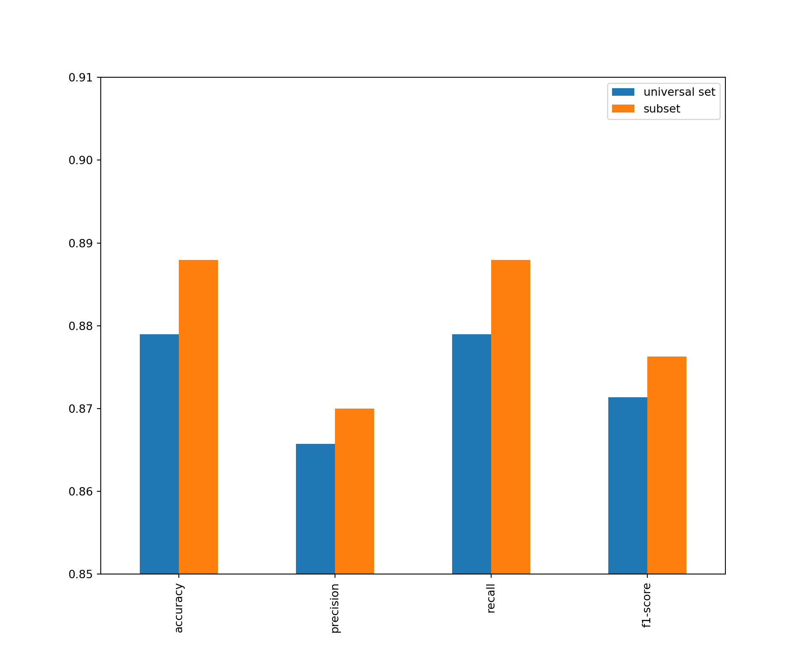
The model established by applying the feature subset has better performance in all aspects, which shows that it is necessary to select features before modelling.
We have tried three feature selection methods: L1 regularisation, Gini impurity, and Entropy. All three methods believe that feature age and campaign have the greatest impact on whether to order products, so we want to further observe how this influence relationship is.
# Further observe the relationship between age and label
sns.jointplot(x='age',y='label',data=new_data,kind='reg',x_estimator= np.mean,order=2)<seaborn.axisgrid.JointGrid object at 0x14f5e1dd0>plt.show()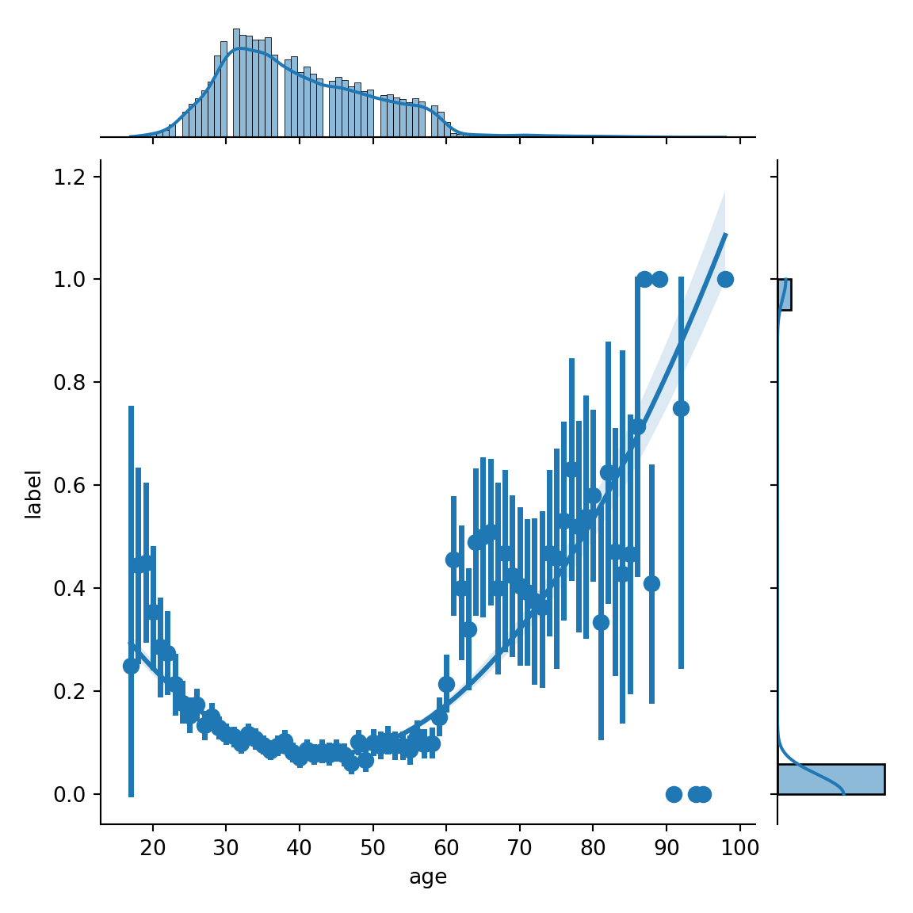
Because label is a discrete variable, it can be replaced by its mean. It can be found that there is a secondary relationship between age and label. Middle-aged people do not like to order products, but young people and the elderly people order products at a higher rate. The discovery can guide banks to position the target audience of telemarketing more accurately.
# Further observe the relationship between campaign and label
f, ax1 = plt.subplots(1, 1, sharex=True, figsize=(6, 4))
c1, c2 = sns.color_palette('Set1', 2)
sns.kdeplot(new_data['campaign'][new_data["label"]==1], shade=True, color=c1, label='Yes',ax=ax1)
sns.kdeplot(new_data['campaign'][new_data["label"]==0], shade=True, color=c2, label='No', ax=ax1)
plt.show()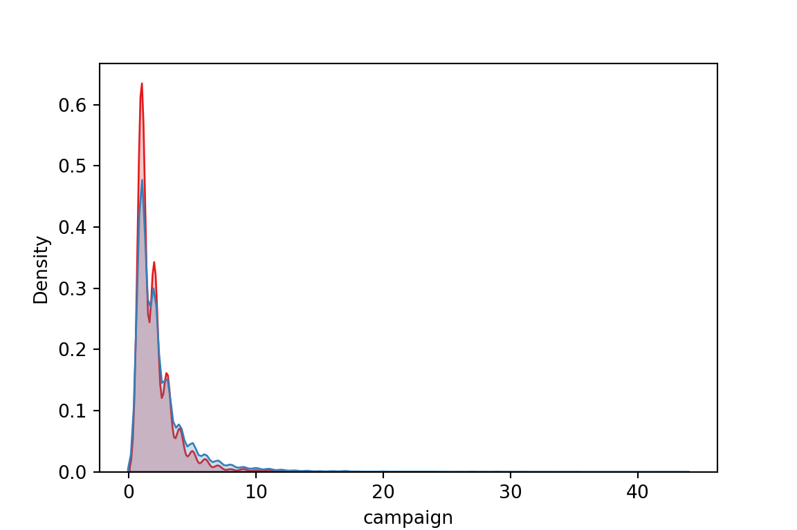
The characteristic campaign represents the number of contacts with customers, the red distribution represents the campaign data distribution of the ordered products, and the blue distribution represents the campaign data distribution that does not order. It can be found that the red distribution is more biased towards 0 and the numerical distribution is smaller, which shows that when the number of contacts is less, customers are more inclined to order products. For banks, the frequent contact of salespeople to customers should be controlled.
In this section, we first downsize the data set train_x containing 56 features, use different methods to reduce the data and conduct visual analysis on the two-dimensional plane, and finally analyze the impact of data downsizing on the model prediction effect.
Let’s first list the variables that will be used later and have been defined before:
| Dataset Name | Meaning |
|————–|———|
| train_x | Training dataset with 56 features |
| test_x | Test dataset with 56 features |
| train_y | True labels for training set |
| test_y | True labels for test set |
# Use index descending to arrange DataFrame
train_x.sort_index(inplace=True)
train_y.sort_index(inplace=True)
new_train_x.sort_index(inplace=True)
train_x.head() age campaign pdays previous emp.var.rate cons.price.idx \
0 0.481481 0.0 1.0 0.0 0.9375 0.698753
1 0.493827 0.0 1.0 0.0 0.9375 0.698753
2 0.246914 0.0 1.0 0.0 0.9375 0.698753
3 0.283951 0.0 1.0 0.0 0.9375 0.698753
5 0.345679 0.0 1.0 0.0 0.9375 0.698753
cons.conf.idx euribor3m nr.employed job_admin. job_blue-collar \
0 0.60251 0.957379 0.859735 0.0 0.0
1 0.60251 0.957379 0.859735 0.0 0.0
2 0.60251 0.957379 0.859735 0.0 0.0
3 0.60251 0.957379 0.859735 1.0 0.0
5 0.60251 0.957379 0.859735 0.0 0.0
job_entrepreneur job_housemaid job_management job_retired \
0 0.0 1.0 0.0 0.0
1 0.0 0.0 0.0 0.0
2 0.0 0.0 0.0 0.0
3 0.0 0.0 0.0 0.0
5 0.0 0.0 0.0 0.0
job_self-employed job_services job_student job_technician \
0 0.0 0.0 0.0 0.0
1 0.0 1.0 0.0 0.0
2 0.0 1.0 0.0 0.0
3 0.0 0.0 0.0 0.0
5 0.0 1.0 0.0 0.0
job_unemployed marital_divorced marital_married marital_single \
0 0.0 0.0 1.0 0.0
1 0.0 0.0 1.0 0.0
2 0.0 0.0 1.0 0.0
3 0.0 0.0 1.0 0.0
5 0.0 0.0 1.0 0.0
education_basic.4y education_basic.6y education_basic.9y \
0 1.0 0.0 0.0
1 0.0 0.0 0.0
2 0.0 0.0 0.0
3 0.0 1.0 0.0
5 0.0 0.0 1.0
education_high.school education_illiterate education_professional.course \
0 0.0 0.0 0.0
1 1.0 0.0 0.0
2 1.0 0.0 0.0
3 0.0 0.0 0.0
5 0.0 0.0 0.0
education_university.degree default_no default_yes housing_no \
0 0.0 1.0 0.0 1.0
1 0.0 1.0 0.0 1.0
2 0.0 1.0 0.0 0.0
3 0.0 1.0 0.0 1.0
5 0.0 1.0 0.0 1.0
housing_yes loan_no loan_yes contact_cellular contact_telephone \
0 0.0 1.0 0.0 0.0 1.0
1 0.0 1.0 0.0 0.0 1.0
2 1.0 1.0 0.0 0.0 1.0
3 0.0 1.0 0.0 0.0 1.0
5 0.0 1.0 0.0 0.0 1.0
month_apr month_aug month_dec month_jul month_jun month_mar \
0 0.0 0.0 0.0 0.0 0.0 0.0
1 0.0 0.0 0.0 0.0 0.0 0.0
2 0.0 0.0 0.0 0.0 0.0 0.0
3 0.0 0.0 0.0 0.0 0.0 0.0
5 0.0 0.0 0.0 0.0 0.0 0.0
month_may month_nov month_oct month_sep day_of_week_fri \
0 1.0 0.0 0.0 0.0 0.0
1 1.0 0.0 0.0 0.0 0.0
2 1.0 0.0 0.0 0.0 0.0
3 1.0 0.0 0.0 0.0 0.0
5 1.0 0.0 0.0 0.0 0.0
day_of_week_mon day_of_week_thu day_of_week_tue day_of_week_wed \
0 1.0 0.0 0.0 0.0
1 1.0 0.0 0.0 0.0
2 1.0 0.0 0.0 0.0
3 1.0 0.0 0.0 0.0
5 1.0 0.0 0.0 0.0
poutcome_failure poutcome_nonexistent poutcome_success
0 0.0 1.0 0.0
1 0.0 1.0 0.0
2 0.0 1.0 0.0
3 0.0 1.0 0.0
5 0.0 1.0 0.0 The dimension reduction method to be shown in this case and the module of sklearn are shown in the following table:
| sklearn Module | Method Called | Dimensionality Reduction Method |
|---|---|---|
| decomposition | PCA KernelPCA |
PCA KPCA |
| discriminant_analysis | LinearDiscriminantAnalysis | LDA |
| manifold | MDS Isomap LocallyLinearEmbedding TSNE SpectralEmbedding |
MDS Isomap LLE t-SNE Spectral Embedding |
The process of calling the above methods for dimension reduction is similar:
First, create an instance according to the specific method: instance name = sklearn module. Called method (setting of some parameters)
Then convert the data: the converted data variable name = instance name.fit_transform(X), and some methods such as LDA dimension reduction also need to provide the label y
Finally, visualize the converted data: enter the converted data and title, and draw a diagram of the two-dimensional space.
from sklearn import (manifold, decomposition, discriminant_analysis)
# %matplotlib inline
# %config InlineBackend.figure_format = 'retina' #The retina high-definition display mode of the pictureAfter importing the necessary packages, we begin to create instances of different dimension reduction classes:
# When creating an instance, there are more parameters that can be adjusted. You might as well try more.
pca = decomposition.PCA(n_components=2)
lda = discriminant_analysis.LinearDiscriminantAnalysis(n_components=1)
kpca = decomposition.KernelPCA(n_components=2, kernel="rbf", fit_inverse_transform=True, gamma=.8)
mds = manifold.MDS(n_components=2, n_init=1, max_iter=100)
iso = manifold.Isomap(n_components=2, n_neighbors=2)
lle = manifold.LocallyLinearEmbedding(n_components=2, n_neighbors=3, eigen_solver='dense')
tsne = manifold.TSNE(n_components=2, init='pca', random_state=10)
spectral = manifold.SpectralEmbedding(n_components=2, random_state=10, eigen_solver='arpack')
names = ['PCA', 'LDA', 'KPCA', 'MDS', 'ISOMAP', 'LLE', 't-SNE', 'Spectral Embedding']
algorithms = [pca, lda, kpca, mds, iso, lle, tsne, spectral]Next, the results of different dimension reduction methods can be visualized on the two-dimensional plane in turn.
#The hexadecimal color code represents light green and orange respectively.
colors = ['#5dbe80','#efab40'] """
The function plot_2d(datax,datay) is used to reduce the dimension of datax data;
Input: unlabeled datax, labeled data datay;
Output: None
"""'\nThe function plot_2d(datax,datay) is used to reduce the dimension of datax data;\n\nInput: unlabeled datax, labeled data datay;\n\nOutput: None\n'def plot_2d(datax, datay):
for i, algorithm in enumerate(algorithms):
if algorithm == lda:
lda.set_params(n_components=1)
x_2d = algorithm.fit_transform(datax, datay)
else:
x_2d = algorithm.fit_transform(datax)
plt.subplot(2, 4, i+1)
for j, label in enumerate(datay.unique()):
plt.scatter(x_2d[datay==label, 0],
x_2d[datay==label, 1],
color=colors[j],
label=label)
plt.legend(loc='best', frameon=True, edgecolor='k', shadow=False, scatterpoints=1)
plt.title(names[i])
plt.xticks([])
plt.yticks([])fig, axes = plt.subplots(2,4,figsize=(15,10))
# There is too much data and the operation is too slow. We only select the first 3,000 lines for visualization.
plot_2d(train_x.iloc[0:3000], train_y.iloc[0:3000])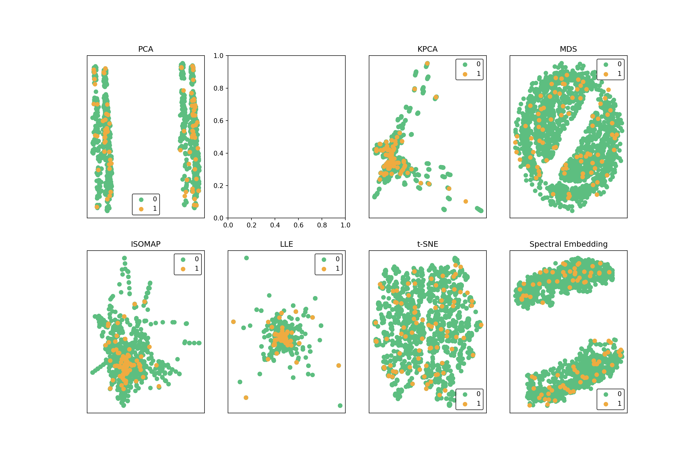
It can be seen that the two-dimensional plane cannot see the embedded structure of the original data. Next, let’s see whether the data dimension reduction will affect the performance of the model.
After using PCA or LDA dimension reduction, we can obtain the degree of interpretation of the component to the original data variance after dimension reduction through the explained_variance_ratio_ method. Here we take PCA as an example.
# Build a pca_var_explained_df data box to facilitate subsequent drawing with seaborn
components = 10
pca = decomposition.PCA(n_components=components).fit(train_x)
pca_var_explained_df = pd.DataFrame({'principal component':np.arange(1,components+1),
'variance_explained':pca.explained_variance_ratio_})
pca_var_explained_df principal component variance_explained
0 1 0.122913
1 2 0.085296
2 3 0.076348
3 4 0.072643
4 5 0.056123
5 6 0.046554
6 7 0.045513
7 8 0.041948
8 9 0.036781
9 10 0.036043Then we take each main component as the horizontal coordinate, and the corresponding degree of interpretation of the original data is the vertical coordinate to make a bar chart:
ax = sns.barplot(x='principal component',
y='variance_explained',
data=pca_var_explained_df,
palette="Set1")
ax.set_title('PCA - Variance explained')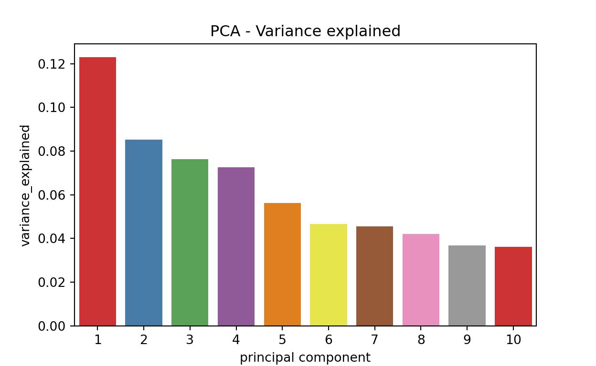
It can be seen that for the data set train_x we use, the main component obtained from PCA dimension reduction has a low degree of interpretation of the original data variance.
Use the Extratree model to discuss here.
"""
The function model_evaluate is used to calculate the impact of mapping data to different dimensions of low-dimensional space on model performance;
Input----------------------------------------------
n_components：Low-dimensional space dimension，Int
names_specified：Specify the dimension reduction method to be used，List
train_x：Training set without label column，DataFrame or ndarray
train_y：Training set label，DataFrame or ndarray
test_x：Test set without labelled column，DataFrame or ndarray
test_y：Test set label，DataFrame or ndarray
----------------------------------------------
Output
f1_all：ExtratreeThe integrated classifier predicts the F1 score on the test set，Dictionary
"""'\nThe function model_evaluate is used to calculate the impact of mapping data to different dimensions of low-dimensional space on model performance;\nInput----------------------------------------------\n n_components：Low-dimensional space dimension，Int\n names_specified：Specify the dimension reduction method to be used，List\n train_x：Training set without label column，DataFrame or ndarray\n train_y：Training set label，DataFrame or ndarray\n test_x：Test set without labelled column，DataFrame or ndarray\n test_y：Test set label，DataFrame or ndarray\n ----------------------------------------------\nOutput\n f1_all：ExtratreeThe integrated classifier predicts the F1 score on the test set，Dictionary\n'def model_evaluate(n_components, names_specified, train_x, train_y, test_x, test_y):
f1_all = {}
pca = decomposition.PCA(n_components=n_components)
lda = discriminant_analysis.LinearDiscriminantAnalysis(n_components=1) # fixed: max 1 for binary classification
kpca = decomposition.KernelPCA(n_components=n_components, kernel="rbf", fit_inverse_transform=True, gamma=.8)
mds = manifold.MDS(n_components=n_components, n_init=1, max_iter=100)
iso = manifold.Isomap(n_components=n_components, n_neighbors=2)
llle = manifold.LocallyLinearEmbedding(n_components=2, n_neighbors=3, eigen_solver='dense')
tsne = manifold.TSNE(n_components=n_components, init='pca', random_state=10)
spectral = manifold.SpectralEmbedding(n_components=n_components, random_state=10, eigen_solver='arpack')
algorithms = [pca, lda, kpca, mds, iso, lle, tsne, spectral]
name_algorithm = {}
for name, algorithm in zip(names, algorithms):
name_algorithm[name] = algorithm
algorithms_specified = []
for name in names_specified:
algorithms_specified.append(name_algorithm[name])
for i, algorithm in enumerate(algorithms_specified):
if algorithm == lda:
dimen_reduct = algorithm.fit(train_x, train_y)
train_x_embed = dimen_reduct.transform(train_x)
test_x_embed = dimen_reduct.transform(test_x)
clf_entropy = ExtraTreesClassifier(criterion='entropy')
model = clf_entropy.fit(train_x_embed, train_y)
pred = model.predict(test_x_embed)
f1_all[names_specified[i]] = metrics.f1_score(test_y, pred, average='weighted')
else:
if hasattr(algorithm, 'transform'):
dimen_reduct = algorithm.fit(train_x)
train_x_embed = dimen_reduct.transform(train_x)
test_x_embed = dimen_reduct.transform(test_x)
clf_entropy = ExtraTreesClassifier(criterion='entropy')
model = clf_entropy.fit(train_x_embed, train_y)
pred = model.predict(test_x_embed)
f1_all[names_specified[i]] = metrics.f1_score(test_y, pred, average='weighted')
return f1_allFor example, we map the data to the two-dimensional space and then build the model. The prediction performance of Extratree obtained is as follows (due to the large consumption of running time for some dimension reduction methods that need to calculate the distance, we only select 5,000 lines of the previous training set for modelling, and readers can try to use the complete training set for modelling):
model_evaluate(n_components=2, names_specified=names, train_x=train_x.iloc[:5000], train_y=train_y.iloc[:5000], test_x=test_x, test_y=test_y){'PCA': 0.8332752479523564, 'LDA': 0.836848555865663, 'KPCA': 0.8370325810725315, 'ISOMAP': 0.8370906564773645, 'LLE': 0.836425077330544}It can be seen that since we only model the data dimension reduction class containing the transform method, we only got the model F1 score after processing the four dimension reduction methods of ISOMAP, KPCA, LLE and PCA. Take PCA as an example. Next, we examine the differences in the model prediction performance obtained by using the PCA method to map data in different low-dimensional spaces and then construct the model, and store the results in the nested dictionary f1:
f1={}
names_specified=['PCA']
# Take {2,3,...,10} dimensions for modelling in low-dimensional space.
for n_components in range(2,11):
f1[n_components]=model_evaluate(n_components, names_specified, train_x, train_y, test_x, test_y)
f1{2: {'PCA': 0.8434635365174643}, 3: {'PCA': 0.8458902836540702}, 4: {'PCA': 0.8507575417633879}, 5: {'PCA': 0.8492337277525046}, 6: {'PCA': 0.8487218936615822}, 7: {'PCA': 0.8461110719500285}, 8: {'PCA': 0.8448759043454537}, 9: {'PCA': 0.845520457538706}, 10: {'PCA': 0.845210717798535}}After obtaining the prediction result, in order to facilitate the drawing, we need to convert the results into dataframe. The final result of the conversion is expected to be the data box diff_n_components of the model F1 under different dimension reduction methods (after-dimensional name is the column name):
# Build a pca_var_explained_df data frame to facilitate subsequent drawing with seaborn
components = 10
diff_n_components = pd.DataFrame({'n_components':f1.keys()})
for name in names_specified:
# Get the model prediction result f1_score and convert it into a data box f1_score_df
for name in names_specified:
f1_score=[]
for key in f1.keys():
f1_score.append(f1[key][name])
f1_score_df = pd.DataFrame({name:f1_score})
# Splice f1_score_df with diff_n_component
diff_n_components = pd.concat([diff_n_components,f1_score_df],axis=1)
diff_n_components n_components PCA
0 2 0.843464
1 3 0.845890
2 4 0.850758
3 5 0.849234
4 6 0.848722
5 7 0.846111
6 8 0.844876
7 9 0.845520
8 10 0.845211for name in names_specified:
ax = sns.barplot(x='n_components',
y=name,
data=diff_n_components,
palette="Set1")
ax.set_title('model evaluation under different dimensionality')
plt.ylim(0.80,0.89)Text(0.5, 1.0, 'model evaluation under different dimensionality')
(0.8, 0.89)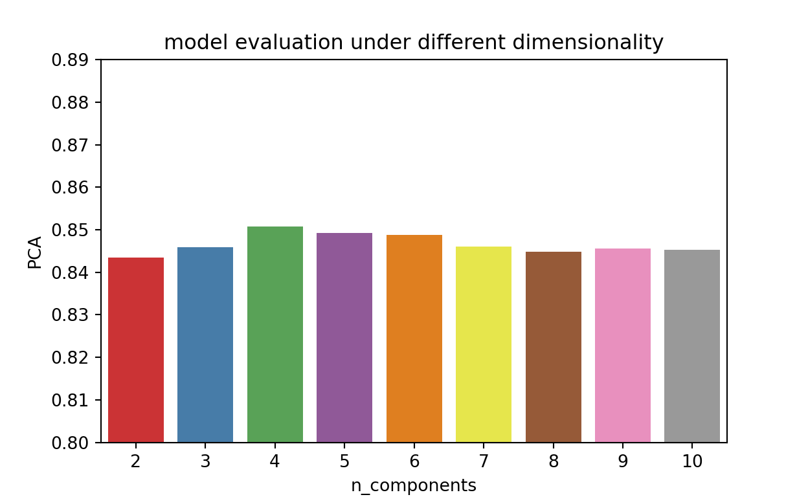
It can be seen from the results that n_components has little impact on the performance of the model.
The above is only analysed from the perspective of the parameters of the model, so what we are most concerned about is whether the data dimension reduction has a significant impact on the performance of the constructed model, and how is the difference from the model performance obtained by the feature selection method. The data sets we are going to use are:
| Dataset Name | Meaning |
|————–|———|
| train_x | Training dataset with 56 features |
| test_x | Test dataset with 56 features |
| new_train_x | Training dataset with 6 features obtained from feature selection |
| new_test_x | Test dataset with 6 features obtained from feature selection |
| train_y | True labels for training set |
| test_y | True labels for test set |
x_labels = ['Original','Feature Selection','Dimensionality Reduction (PCA)']
f1_scores = []
datasets = []
# Model prediction performance under the original data set (56 characteristics)
clf_entropy = ExtraTreesClassifier(criterion='entropy')
clf_entropy = clf_entropy.fit(train_x, train_y)
pred=clf_entropy.predict(test_x)
f1_scores.append(metrics.f1_score(test_y,pred,average='weighted'))
# Model prediction performance under the data set (6 characteristics) obtained by the feature selection method
clf_entropy = ExtraTreesClassifier(criterion='entropy')
clf_entropy = clf_entropy.fit(new_train_x, train_y)
pred=clf_entropy.predict(new_test_x)
f1_scores.append(metrics.f1_score(test_y,pred,average='weighted'))
# PCA data dimension reduction method obtains (mapped to 6-dimensional) model prediction performance
f1_scores.append(f1[6]['PCA'])
f1_scores[0.8719037162877408, 0.8772072745592164, 0.8487218936615822]tmp = zip(x_labels,f1_scores)
method_comp = pd.DataFrame(tmp,columns=["methods","f1_score"])
ax = sns.barplot(x='methods',
y='f1_score',
data=method_comp,
palette="Set1")
ax.set_title('model evaluation under different methods')
plt.ylim(0.80,0.89)(0.8, 0.89)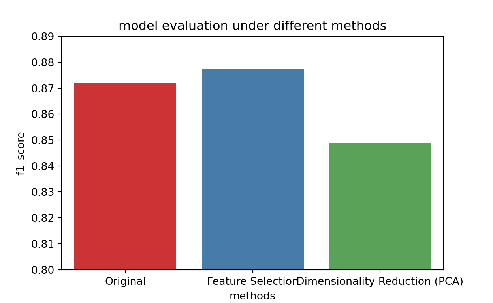
The feature selection method does have an improvement effect on the model, but for the data dimension reduction method, the effect is not as good as the feature selection method, which is related to the specific data set. When the data characteristics reach tens of thousands of levels, the data dimension reduction is beneficial to the interpretation of the model.
For attribution, please cite this work as
Wu (2025, March 20). Longxiang Wu: Bank Telemarketing. Retrieved from https://lunghsiang-wu.github.io/longxiangwu/portfolio/2026-03-19-bank/
BibTeX citation
@misc{wu2025bank,
author = {Wu, Longxiang},
title = {Longxiang Wu: Bank Telemarketing},
url = {https://lunghsiang-wu.github.io/longxiangwu/portfolio/2026-03-19-bank/},
year = {2025}
}